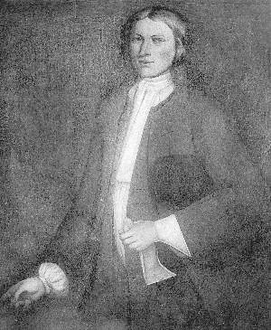

Jacob Ten Broeck
Jacob Ten Broeck was born in August 1700. He was a younger son of Albany mainstays Wessel and Catharina Loockermans Ten Broeck.  He grew up in a trader's home located near the Albany waterfront. In 1723, he was named an heir and co-executor of his father's estate.
In September 1725, he married Christina Van Allen. By 1740, the marriage had produced as many as eleven children who were christened at the Albany Dutch church and at other churches in greater Albany County. He may have married a second time as an "Elizabeth" was identified as his wife in 1746.
Jacob Ten Broeck did not stay in Albany. He lived on the upper Ten Broeck Patent on the west side of the Hudson on land he had inherited from his father. His farm was on the Catskill Creek.
Jacob Ten Broeck filed a will in March 1746. It stated that he was a resident of Kingston. It named his wife, "Elizabeth," and six children as his heirs. He died shortly thereafter as his will passed probate in May. He had lived but forty-five years. One of his daughters was the mother of Albany jurist Abraham Van Vechten.
Sources: The life of Jacob Ten Broeck is CAP biography number 50. This sketch is derived chiefly from family and community-based resources. Because this Jacob Ten Broeck was less of an early Albany person, here is a link to material on him from Walter Gilbert.
Very very poor-quality copy of a Limner portrait of Jacob Ten Broeck painted about 1720. Source and provenance unknown. Printed in Runk, Ten Broeck Genealogy, between pp. 60-61.